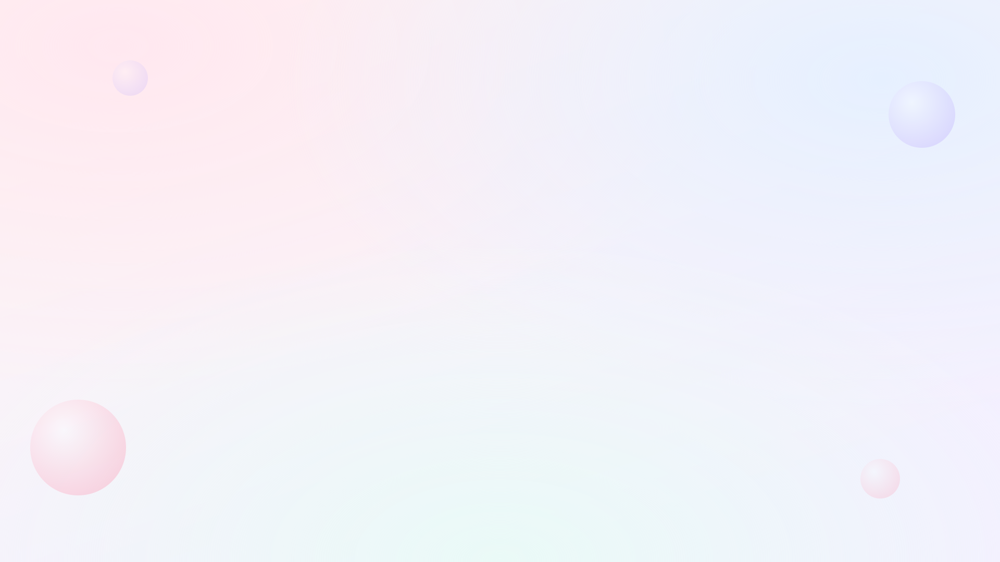

에셋 시트
토러스와 즐기는 랜덤 메모리 게임 — 그림 목록과 규격.
도형 8종은 확정, 캐릭터·로고·파비콘·하트는 그림을 받았고,
지금 남은 것은 배경이다.
이 문서의 그림은 실제 게임 코드에서 그대로 뽑은 것이라 현재 화면과 같다.
전체 목록
| # | 에셋 | 상태 | 개수 | 캔버스 | 고칠 파일 |
|---|
| 1 | 타이틀 로봇 캐릭터 | 그림 받음 | 1 | 200 × 200 | js/mascot.js |
| 2 | 안내 캐릭터 (게임 중) | 그림 받음 | 몸 1 + 표정 4 | 120 × 120 | js/torus.js |
| 3 | 도형 | 확정 · 유지 | 8 | 100 × 100 | js/shapes.js |
| 4 | 기관 로고 (경남수학문화관) | 그림 받음 | 1 | 가로형, 높이 기준 | assets/logo.svg |
| 5 | 파비콘(탭 아이콘) | 그림 받음 | 1 | 64 × 64 | favicon.svg |
| 6 | 목숨 하트 | 그림 받음 | 3 | 100 × 100 | assets/heart*.svg |
| 7 | 배경 그림 | 지금 그리는 중 | 1 | 1920 × 1080 | assets/background.svg |
| 8 | 색종이 조각 | 선택 | — | CSS 도형 | style.css |
| 9 | 제목 서체 | 선택 | 1 | woff2 | fonts/ |
공통 규칙 — 이건 지켜야 함
① 4색은 바꾸면 안 됨
실물 아케이드 버튼 색과 반드시 같아야 한다. 화면의 카드·패드 색은 고정이다.
빨강 #e53935 (0번)
노랑 #fdd835 (1번)
초록 #43a047 (2번)
파랑 #1e88e5 (3번)
왼쪽→오른쪽 순서(빨·노·초·파)도 함체 버튼 배치와 같아서 고정이다.
② 파일 형식은 SVG(패스)
- PNG·JPG 는 쓰지 않는다. 오프라인 키오스크에서 해상도 상관없이 선명해야 한다.
- 일러스트레이터·피그마에서 그린 뒤 SVG로 내보내면 그대로 넣을 수 있다.
- 패스를 하나로 합쳐 주면 제일 깔끔하다(도형은 특히). 색은 코드에서 지정하므로 검정 단색으로 그려도 된다.
③ 배경이 두 종류다
- 밝은 파스텔 배경 — 타이틀·회상·결과 화면. 흰색으로 그리면 안 보인다.
- 어두운 무대(#4a3f5e) — 암기 화면 가운데 판. 여기 올라가는 건 흰색이어야 한다.
도형 8종은 확정이라 새로 그릴 필요가 없다.
나중에 바꾸게 된다면, 두 도형이 비슷하게 생기지 않는지 꼭 확인할 것 —
2·3차 게임에서 4개 중 하나를 고르는 문제로 쓰이므로, 닮은 조합이 있으면
기억력이 아니라 눈썰미 문제가 되어 게임이 불공정해진다.
1. 타이틀 로봇 캐릭터
1
메인 표지 캐릭터
js/mascot.js
타이틀 화면에만 나온다. 시안을 보고 대강 옮겨 그린 것이라 새로 그릴 대상 1순위다.
- 캔버스
viewBox="0 0 200 200", 정사각형
- 발밑 그림자까지 포함해 캔버스 안에 넣을 것
- 밝은 배경 위에 놓이므로 윤곽선이 있어야 형태가 산다 (지금은 남색 #232c52)
- 가슴 로고 자리 — 지금은 4색 점으로 대체해 뒀다. 정확한 로고 SVG를 주면 그 자리에 넣는다
- 움직임(안테나 흔들림·손 흔들기)은 CSS로 붙어 있다. 부위별로 그룹(
<g>)을 나눠 주면 그대로 살릴 수 있다
2. 토러스 — 게임 중 안내자
2
도넛 마스코트 (표정 4종)
js/torus.js
차수 안내·클리어·오답·게임오버 화면에 나온다. 몸은 하나이고 표정만 갈아 끼우는 구조다.
- 캔버스
viewBox="0 0 120 120", 정사각형
- 표정 4종:
idle(기본) / talk(말함) / cheer(기쁨) / sad(시무룩)
- 기쁜 표정은 하나면 된다 — 단계 클리어와 올클리어가 같은 표정을 쓴다.
올클리어가 더 요란한 건 색종이·반짝임 같은 화면 연출이지 표정이 아니다
- 눈·입만 따로 그려 주면 된다. 몸은 하나만 그리고 표정 부품을 겹쳐 쓴다
- 팔은 기쁠 때 만세를 한다 — 팔을 별도 그룹으로 빼 두면 회전이 그대로 적용된다
- 옆에 말풍선이 붙으므로 머리 위쪽에 여백을 남길 것
타이틀 로봇으로 통일하고 싶으면 이 캐릭터를 없애고 로봇의 표정 4종을 그려도 된다.
그 경우 게임 이름(“토러스와 즐기는”)도 같이 정할 것.
3. 도형 8종 — 확정. 새로 그리지 않아도 됨
이 8종은 그대로 간다. 아래 규격은 나중에 고칠 일이 생겼을 때를 위한 기록이다.
3차 “모양 기억” 게임의 문제. 암기 화면에서는 색이 입혀져 크게 뜨고,
회상 화면에서는 흰색 실루엣으로 4개 중 하나를 고른다.
회상 화면 — 색 카드 위 흰색 실루엣
암기 화면 — 어두운 무대 위, 색은 매번 랜덤(교란 요소)
- 캔버스
viewBox="0 0 100 100", 정사각형. 8개 모두 같은 규격
- 단색 실루엣만 쓴다 — 그라데이션·내부 선·구멍 뚫린 디테일은 지워진다
- 캔버스를 꽉 채우되 가장자리 2~5 정도 여백을 둘 것 (카드 안에서 잘리지 않게)
- 가운데가 뚫린 모양(달 같은)은
fill-rule="evenodd"로 처리된다
- 개수는 8개를 유지하는 게 좋다 — 4지선다 보기를 만들려면 최소 4개 필요하고, 적으면 쉬워진다
- 이름(
circle, square, …)을 바꾸면 js/config.js의 SHAPES 목록도 같이 고쳐야 한다.
안 맞으면 테스트가 잡아낸다
서로 헷갈리면 안 됨. 지금 8종은 동그라미·네모·세모·별·하트·다이아·달·십자다.
새로 그릴 때 “네모와 다이아”, “동그라미와 달”처럼 실루엣이 닮은 조합이 생기지 않는지
네 개를 나란히 놓고 확인할 것.
4~8. 나머지
4
기관 로고 — 경남수학문화관
assets/logo.svg
 지금 들어간 임시 로고
지금 들어간 임시 로고
지금 것은 임시입니다. 공식 로고 원본 파일을 받지 못해
기관명만 적은 임시 레터마크를 넣어 두었습니다.
공식 로고 파일을 주시면 그대로 교체됩니다 — 코드는 안 고쳐도 됩니다.
- 파일을
assets/logo.svg 자리에 같은 이름으로 덮어쓰기만 하면 끝
- SVG 권장. PNG 면
js/logo.js의 경로 한 줄만 바꾸면 된다
- 가로:세로 비율은 자유 — 코드가 높이 기준으로 맞춘다
- 모든 화면에 나온다: 게임 중에는 오른쪽 아래 작게(약 30px),
타이틀·올클리어에서는 아래 가운데 크게(약 70~96px)
- 밝은 파스텔 배경 위에 놓이므로 흰색 단색 로고는 피할 것.
배경 투명(PNG면 알파) 버전이 가장 좋다
5파비콘 (브라우저 탭 아이콘)
favicon.svg
 64 × 64
64 × 64
- 아주 작게(16px) 표시되므로 디테일을 다 지우고 실루엣만 남길 것
- 배경까지 포함해 그린다(투명 배경이면 밝은 탭에서 안 보인다)
- 캐릭터를 새로 그리면 이것도 같이 맞추는 게 좋다
6목숨 하트
js/scenes/hud.js
화면 왼쪽 위에 3개 표시된다. 지금은 글자(♥)를 쓰고 있어서 서체에 따라 모양이 달라진다.
- SVG로 바꾸면 어디서나 같은 모양이 된다
- 켜진 상태(분홍)와 꺼진 상태(회색) 두 가지가 필요하다 — 색만 바뀌면 하나로 충분
- 틀렸을 때 깨지는 연출이 있다. 깨진 하트를 따로 그려 주면 더 살아난다
7색종이 · 배경 방울
style.css
그림 파일이 아니라 CSS 도형이다. 올클리어 때 떨어지는 색종이는 둥근 사각형,
배경에 떠다니는 건 흐린 원이다.
- 모양을 바꾸고 싶으면 SVG 조각으로 교체 가능 (예: 별·하트 색종이)
- 색만 바꾸는 건
style.css 한 줄이면 된다
8제목 서체
fonts/
지금은 Do Hyeon(배민 도현체). 재배포가 허용된 무료 서체(OFL)라 저장소에 같이 넣어 뒀다.
- 바꾸려면
.woff2 파일을 fonts/에 넣고 style.css의 @font-face 한 곳만 고치면 된다
- 반드시 재배포 허용 서체일 것 — 키오스크는 오프라인이라 CDN을 못 쓴다
- 숫자 게임이 있으므로 0과 O, 6과 9가 확실히 구별되는 서체를 고를 것
7. 배경 그림 — 지금 그리는 중
7
전 화면 공통 배경
assets/background.svg

지금 들어간 배경 (1920 × 1080)
규격
- 1920 × 1080 (16:9) 기준으로 그린다. 파일 이름은
assets/background.svg
- 모든 화면에서 같은 배경 하나를 쓴다. 화면마다 바꾸지 않는다
- 화면 비율이 다르면
cover로 잘려서 들어간다(늘어나지 않는다).
→ 가장자리 10% 안쪽에는 중요한 걸 두지 말 것
- SVG 권장. 사진 같은 그림이면 PNG/JPG 도 되지만, 키오스크가 오프라인이라 파일이 크면 로딩이 느려진다
(2MB 넘지 않게)
배경은 주인공이 아니다. 이 위에 카드·숫자·글자가 올라간다.
배경이 진하거나 무늬가 촘촘하면 글씨가 안 읽히고 카드가 묻힌다.
연한 색으로, 대비를 낮게, 가운데는 되도록 비워 둘 것.
안전 영역 — 어디를 비워야 하는지
위쪽 띠 — 하트 · 차수 배지 · 진행 점
가운데 · 비워 둘 것
카드 · 큰 숫자 · 어두운 무대
기관 로고
안내 캐릭터
빨간 선 바깥쪽은 화면 비율에 따라 잘릴 수 있음
화면 어디에 뭐가 올라오는지
| 자리 | 올라오는 것 | 배경에서 주의할 점 |
|---|
위쪽 띠
(높이 9%) |
하트 · 차수 배지 · 진행 점 |
흰 배지와 분홍 하트가 놓인다. 이 띠는 밝게 두는 게 안전 |
| 가운데 (제일 중요) |
암기용 어두운 무대, 4색 카드, 큰 글자 |
비워 둘 것. 무늬가 있으면 카드 테두리와 섞여 지저분해진다 |
| 아래 가운데 |
기관 로고(타이틀에서는 크게) |
로고가 묻히지 않게 연한 색으로 |
| 왼쪽 아래 |
암기 화면의 안내 캐릭터 |
캐릭터와 색이 겹치지 않게 |
| 네 모서리 |
— |
여기는 마음껏 써도 되는 자리. 장식은 여기에 |
확인하는 법
- 그린 파일을
assets/background.svg 에 덮어쓰고 게임을 열면 바로 보인다
- 타이틀 화면과 암기 화면 두 곳만 봐도 대부분 판단이 된다 —
글자가 읽히는지, 카드가 뜨는지
- 창 크기를 가로로 길게 / 세로로 길게 늘여 보면 잘리는 범위를 알 수 있다
파일 이름 — 이대로 주시면 됩니다
이름을 코드에서 쓰는 키와 똑같이 맞추면 어느 파일이 어느 그림인지 헷갈릴 일이 없다.
| 에셋 | 파일 이름 | 비고 |
|---|
| 도형 8종 |
확정 — 넘길 파일 없음
(지금 그림 그대로 간다) |
| 타이틀 로봇 | assets/mascot.svg | 받음 |
안내 캐릭터 4종
(게임 중) |
assets/torus-idle.svg | 기본 · 받음 |
assets/torus-talk.svg | 말함 · 받음 |
assets/torus-cheer.svg | 기쁨 · 받음 |
assets/torus-sad.svg | 시무룩 · 받음 |
| 기관 로고 | assets/logo.svg | 받음 |
| 파비콘 | favicon.svg | 받음 · 저장소 맨 위 |
| 목숨 하트 3종 |
assets/heart.svg | 온전 · 받음 |
assets/heart-broken.svg | 깨짐 · 받음 |
assets/heart-off.svg | 회색(잃음) · 받음 |
| 배경 |
assets/background.svg | 지금 그리는 중 |
나중에 도형을 바꾸게 되면 파일 이름은
assets/shapes/<키>.svg 로 하면 된다
(circle · square · triangle · star · heart · diamond · moon · cross).
이 8개 이름은 js/config.js 의 SHAPES 목록과 글자까지 같아야 하고,
어긋나면 테스트가 잡아낸다.
그릴 때 공통
- 색은 신경 쓰지 않아도 된다. 코드에서 칠한다 — 검정 단색으로 그려도 그대로 쓴다
(도형은 특히. 흰색으로 칠해 두면 오히려 확인하기 어렵다)
- 토러스 표정 4종은 몸까지 통째로 그려서 4장 주면 된다. 달라지는 부분(눈·입·팔)만 내가 뽑아 쓴다
- 도형 8종은 넘길 게 없다 — 지금 것으로 확정
- 레이어·그룹 이름은 남겨 둘 것 — 움직임을 붙일 때 쓴다
넘겨줄 때
위 이름으로 SVG 파일을 주면 된다. 한꺼번에 다 줄 필요는 없고, 다 된 것부터 하나씩 줘도
그때그때 바꿔 넣는다. 이름이 다르면 어느 그림인지만 알려주면 맞춰 넣는다.
지금 남은 것은 배경 하나다 — 나머지는 자리와 크기를 모두 잡아 뒀으니
파일만 오면 바로 들어간다.
참고: torus- 는 도넛이 아니라 마스코트 이름에서 온 것이라,
캐릭터가 로봇으로 바뀌어도 파일 이름은 그대로 쓴다.